A CNN is composed of a sequence of layers, where every layer of the network goes through a differentiable function to transform itself from one volume of activation to another. Four main types of layers are used to build a CNN: Convolutional layer, Rectified Linear Units layer, Pooling layer, and Fully-connected layer. All these layers are stacked together to form a full CNN.
A regular CNN could have the following architecture:
[INPUT - CONV - RELU - POOL - FC]
However, in a deep CNN, there are generally more layers interspersed between these five basic layers.
A classic deep neural network will have the following structure:
Input -> Conv->ReLU->Conv->ReLu->Pooling->ReLU->Conv->ReLu->Pooling->Fully Connected
AlexNet, as mentioned in the earlier section, can be taken as a perfect example for this kind of structure. The architecture of AlexNet is shown in Figure 3.4. After every layer, an implicit ReLU non-linearity has been added. We will explain this in detail in the next section.
One might wonder, why do we need multiple layers in a CNN? The next section of this chapter shall explain this as well:
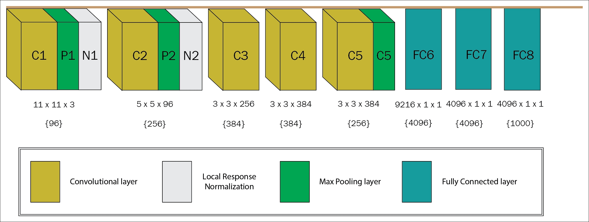
Figure 3.4: An illustration of the depth and weight of the AlexNet is shown in the figure. The number inside the curly braces denotes the number of filters with dimensions written above.
In the paper [96], the author has put forward a few statistics, to show how deep networks help in gaining more accuracy of the output. As noted, the Architecture of Krizhevsky et al. model uses eight layers, which are trained on ImageNet. When the fully connected top layer (7th layer) is removed, it drops approximately 16 million parameters with a performance drop of 1.1%. Furthermore, when the top two layers (6th and 7th) are removed, nearly 50 million parameters get reduced along with a 5.7% drop in performance. Similarly, when the upper feature extractor layers (3rd and 4th) are removed, it results in a drop of around 1 million parameters with a performance drop of 3.0%. To get a better insight of the scenario, when the upper feature extractor layers and the fully connected (3rd, 4th, 6th, and 7th) layers are removed, the model was left with only four layers. In that case, a 33.5% drop in performance is experienced.
Therefore, it can be easily concluded that we need deep convolutional network to increase the performance of the model. However, as already stated, a deep network is extremely difficult to manage in a centralized system due to limitations of memory and performance management. So, a distributed way of implementing deep CNN is required. In the subsequent sections of this chapter, we will explain how to implement this with the help of Deeplearning4j, and integrating the processing with Hadoop's YARN.
As illustrated in the architecture overview, the main purpose of convolution is to allow the model to work with a limited number of inputs at a particular time. Moreover, convolution supports three most important features, which substantially help in improving the performance of a deep learning model. The features are listed as follows:
We will now describe each of these features in turn.
As already explained, the traditional network layers use matrix multiplication by a matrix of parameters with a different parameter describing the interaction between each output unit and input unit. On the other hand, CNNs use sparse connectivity, sometimes referred to as sparse interactions or sparse weights, for this purpose. This idea is attained by keeping the size of the kernel smaller than the input, which helps in reducing the time complexity of the algorithm. For example, for a large image dataset, the image could have thousands or millions of pixels; however, we can identify the small, significant features of the image, such as edges and contours from the kernels, which only have hundreds or tens of the whole pixels. Therefore, we need to keep only a small number of parameters, which, in turn, helps in the reduction of memory requirements of the models and datasets. The idea also alleviates the number of operations, which could enhance the overall computing power. This, in turn, decreases the running time complexity of the computation in a huge manner, which eventually ameliorates its efficiency. Figure 3.5 diagrammatically shows, how with the sparse connectivity approach, we can reduce the number of receptive fields of each neuron.
Each neuron in a Convolutional layer renders the response of the filters applied in the previous layer. The main purpose of these neurons is to pass the responses through some non-linearity. The total area of the previous layers, where that filter was applied, is termed as the receptive field of that neuron. So, the receptive field is always equivalent to the size of the filter.
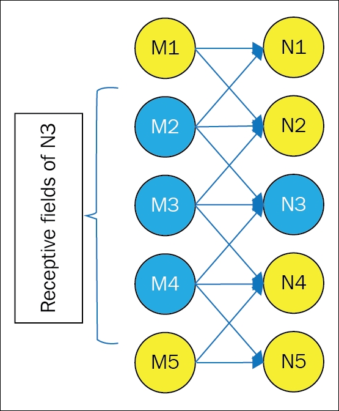
Figure 3.5: The figure shows how the input units of M affect the output unit N3 with sparse connectivity.Unlike matrix multiplication, the number of receptive fields in the sparse connectivity approach reduce from five to three (M2, M3, and M4). The arrows indicate the parameter sharing approach too. The connections from one neuron are shared with two neurons in the model
Therefore, with the sparse connectivity approach, the receptive fields for each layer are smaller than the receptive fields using the matrix multiplication approach. However, it is to be noted that for deep CNNs, the receptive field of the units is virtually larger than the receptive fields of the corresponding shallow networks. The reason is that all the units in the deep networks are indirectly connected to almost all the neurons of the network. Figure 3.6 shows a visual representation of such a scenario:
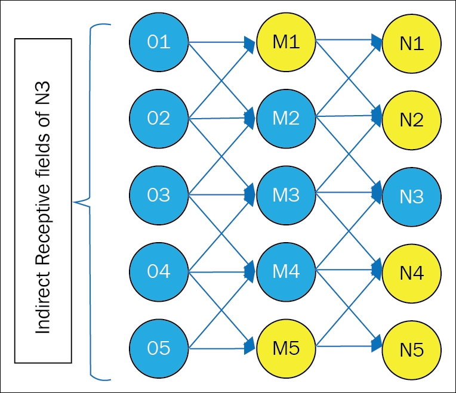
Figure 3.6: Representation of sparse connectivity for deep layers of convolution neural networks. Unlike Figure 3.5, where unit N3 had three receptive fields, here the number of receptive fields of N3 has increased to five.
Similar to the example given in the previous section, if there are p inputs and q outputs in a layer, then the matrix multiplication will require (p*q) number of parameters. The running time complexity of the algorithm will become O (p*q). With the sparsely connected approach, if we limit the number of upper limit connections associated with each output to n, then it will need only n*q parameters, and the runtime complexity will reduce to O (n*q). For many real-life applications, the sparse connectivity approach provides good performance for the deep learning tasks while keeping the size of n <<p.
Parameter sharing can be defined as the process by which the same parameter for a function can be used for multiple functions in the model. In regular neural networks, each element of the weight matrix is applied exactly once, when calculating the output of a layer. The weight is multiplied by one element of the input, but never revisited. Parameter sharing can also be referred to as tied weights, as the value of the weight used to one input is tied to the value weight used for others. Figure 3.5 can also be viewed as an example for parameter sharing. For example, a particular parameter from M2 is used with both N1 and N3.
The main purpose of the operation is to control the number of free parameters in the Convolutional layer. In a CNN, each element of the kernel is used at almost every position of the input. One logical assumption for this is that if one of the features is desirable at some spatial position, then it should also be necessary to calculate the other positions.
Since all the elements of a single depth slice share the same type of parametrization, the forward pass in each depth slice of the Convolutional layer can be measured as a convolutional of input volume with the weights of the neurons. The outcome of this convolution is an activation map. These collections of activation maps are stacked together with the association of depth dimension to result the output volume. Although the parameter sharing approach bestows the translation invariance of the CNN architecture, it does not enhance the runtime of forward propagation.
In parameter sharing, the runtime of the model still remains O (n*q). However, it helps to reduce the overall space complexity in a significant way, as the storage requirement of the model reduces to n number of parameters. Since p and q are generally of similar sizes, the value of n becomes almost negligible as compared to p*q.
In the convolution layer, due to parameter sharing, the layers possess a property termed as equivariance to translation. An equivariant function is defined as a function whose output changes in the same way the input does.
Mathematically, if X and Y both belong to a same group G, then a function f: X 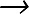 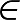
In case of convolution, if we take g to be any function, which shifts the input in equal magnitude, then the convolution function is equivariant to g. For example, let I be a function that gives the image color for any even coordinate. Let h be another function, which maps one image function to another image function, given by the following equation:
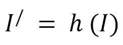
I/ is an image function that moves every pixel of I five units to the right. Therefore, we have the following:
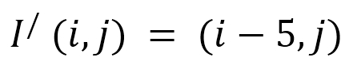
Now, if we apply this translation to I, followed by the convolution, the result would be exactly the same when we apply convolution to I/, followed by the transformation function h to the output.
In case of images, a convolution operation generates a two-dimensional map of all the definite features present in the input. So, similar to the earlier example, if we shift the object in the output by some fixed scale, the output representation will also move in the same scale. This concept is useful for some cases; for example, consider a group photo of cricket players of two different teams. We can find some common feature of the jersey in the image to detect some players. Now, the similar feature will obviously be present in others' t-shirts as well. So, it is quite practical to share the parameter across the entire image.
Convolution also helps to process some special kinds of data, which are difficult, or rather not even possible, with the traditional fixed-shape matrix multiplication approach.
So far we have explained how each neuron in the convolution layers is connected to the input volume. In this section, we will discuss the ways of controlling the size of the output volume. In other words, controlling the number of neurons in the output volume, and how they are arranged.
Basically, there are three hyperparameters, which control the size of the output volume of the Convolutional layers. They are: the depth, stride, and zero-padding.
How do we know how many Convolutional layers should we use, what should be the size of the filters, or the values of stride and padding? These are extremely subjective questions, and their solutions are not at all trivial in nature. No researchers have set any standard parameter to choose these hyperparameters. A neural network generally and largely depends on the type of data used for training. This data can vary in size, complexity of the input raw image, type of image processing tasks, and many other criteria. One general line of thought by looking at the big dataset, is that one has to think how to choose the hyperparameters to deduce the correct combination, which creates abstractions of the images at proper scale. We'll discuss all these in this subsection.
In the output volume, depth is considered as an important parameter. The depth corresponds to the number of filters we would like to apply for each learning iteration on some changes in the input. If the first Convolutional layer takes a raw image as the input, then multiple neurons along the depth dimension might activate in the presence of various blobs of colors or different oriented edges. The set of neurons in the same regions of input are termed as a depth column.
Stride specifies the policy of allocation of depth columns around the spatial dimension (width and height). It basically controls how the filter convolves around the input volume. Stride can be formally defined as the amount by which the filter shifts during the convolution. Ideally, the value of stride should be an integer and not a fraction. Conceptually, this amount helps in deciding how much of the input image information one wants to retain before proceeding to the next layer. The more the stride, the more information that will be retained for the next layer.
For example, when the stride is 1, a new depth column is allocated to spatial positions, one spatial unit apart. This produces large output volumes due to heavily overlapping receptive fields in between the columns. On the other hand, if the value of stride is increased, there will be less overlapping among the receptive fields, which results in spatially smaller dimensional output volume.
We will take an example to simplify the concept a bit more. Let us imagine a 7*7 input volume and a 3*3 filter (we will ignore the third dimension for the sake of simplicity), with a stride of 1. The output volume in this case would be of dimension 5*5, as shown in Figure 3.7. However, this looks somewhat straightforward. Now, with stride 2, keeping the other parameters the same, the output volume would have less dimensionality of the order 3*3. In this case, the receptive field will shift by 2 units, and hence, the volume will shrink to a dimension of 3*3:
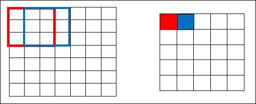
Figure 3.7: Illustration of how the filter convolves around the input volume of 7x7 with stride 1 resulting in 5x5 output volume.
This is illustrated in Figure 3.8. All these calculations are based on some formula mentioned in the next topic of this section. Now, if we want to increase the stride further to 3, we will have difficulties with spacing and making sure the receptive field fits on the input volume. Ideally, a programmer will raise the value of the stride only if lesser overlapping of the receptive fields is required, and if they need smaller spatial dimensions:
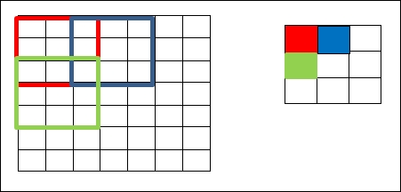
Figure 3.8: Illustration of how the filter convolves around the input volume of 7x7 with stride 2 resulting in 3x3 output volume.
We've already got enough information to infer that, as we keep applying more convolution layers to the input volume, the size of the output volume decreases further. However, in some cases, we might want to preserve almost all the information about the original input volume so that we can also extract the low-level features. In such scenarios, we pad the input volume with zeroes around the borders of the input volume.
This size of zero-padding is considered as a hyperparameter. It can be defined as a hyperparameter, which is directly used to control the spatial size of the output volume in scenarios where we want to exactly preserve the spatial size of input volume.
For example, if we apply a 5*5*3 filter to a 32*32*3 input volume, the output volume will reduce to 28*28*3. However, let's say we want to use the same Convolutional layer, but need to keep the output volume to 32*32*3. We will use a zero-padding of size 2 to this layer. This will give us an output volume of 36*36*3, as shown in the following figure. Now, if we apply three convolution layers with a 5*5*3 filter, it will produce an output volume of 32*32*3, hence maintaining the exact spatial size of the input volume. Figure 3.9 represents the pictorial views of the scenario:
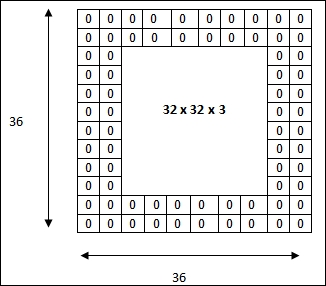
Figure 3.9: The input volume has a dimension of 32*32*3. The two borders of zeros will generate an input volume of 36*36*3. Further application of the Convolution layer, with three filters of size 5*5*3, having stride 1, will result in an output volume of 32*32*3.
This part of the chapter will introduce an equation to calculate the spatial size of the output volume based on the hyperparameters that we have discussed so far. The equation is extremely useful to choose the hyperparameter for the CNN, as these are the deciding factors to 'fit' the neurons in the network. The spatial size of the output volume can be written as a function of the input volume size (W), the receptive field size, or the filter size of the Convolutional layer neurons(K), value of the applied stride(S), and the amount of zero-padding used (P) on the border.
The equation to compute the spatial size of output volume can be written as follows:
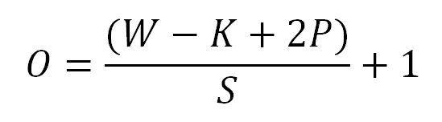
Considering the examples given in Figure 3.7 and Figure 3.8, where W=7, K=3, and with no padding, P =0. For stride 1, we have S=1, and this will give the following:
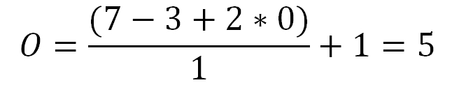
Similarly for stride 2, the equation will give a value of 2:
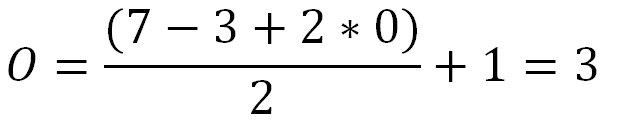
Hence, as shown in Figure 3.7, we would get an output of a spatial size of 3. However, with this configuration, when a stride of 3 is applied, it will not fit across the input volume, as this equation will return a fractional value 2.333 for the output volume:
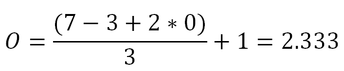
This also signifies that the values of the hyperparameter have mutual constraints. The preceding example returns a fractional value, hence, the hyperparameters would be considered as invalid. However, we might resolve the issue by adding some zero-padding around the border.
As mentioned in the zero-padding section, its main purpose is to preserve the information of input volume to the next layer. To ensure same spatial size of input and output volume, the conventional formula for zero-padding, with a stride, S=1, is as follows:
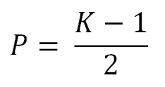
Taking the example given in Figure 3.9, we can verify the authenticity of the formula. In the example, W = 32, K=5, and S=1. Therefore, to ensure the spatial output volume to be equal to 32, we choose the number of zero-padding as follows:
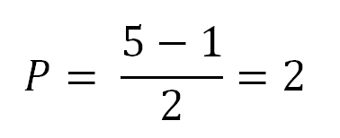
So, with P=2, the spatial size of the output volume is given as follows:
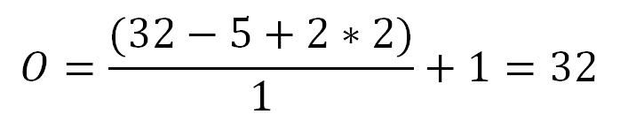
So, this equation worked out well to preserve the same spatial dimension for the input volume and output volume.
In the convolution layer, the system basically computes the linear operations by doing element-wise multiplication and summations. Deep convolution usually performs the convolution operations followed by a non-linear operation after each layer. This is essential, because cascading linear operations produce another linear system. Adding non-linearity in between the layers corroborates a more expressive nature of the model than a linear model.
Therefore, after each convolution layer, an activation layer is applied on the current output. So, the main objective of this activation layer is to introduce some non-linearity to the system. Modern CNNs use Rectified Linear Unit (ReLu) as the activation function.
In artificial neural networks, the activation function, the rectifier, is defined as follows:
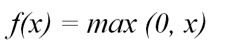
where x is the input to a neuron.
A unit operating the rectifier is termed as ReLU. Earlier, many non-linear functions such as tan h, sigmoid, and the like were used in the network, but in the last few years, researchers have identified that ReLU layers work much better, because they help the network to train a lot faster, without compromising the accuracy of the outcome. A significant improvement in the computational efficiency is a major factor for this.
Furthermore, this layer enhances the non-linear properties of the model and other overall networks without having any impact on the receptive fields of the Convolutional layer.
Recently, in 2013, Mass et al. [94] introduced a new version of non-linearity, termed as leaky-ReLU. Leaky-ReLU can be defined as follows:
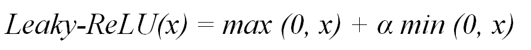
where α is a predetermined parameter. Later, in 2015, He et al [95] updated this equation by suggesting that the parameter α can also be trained, which leads to a much-improved model.
ReLU helps to alleviate the vanishing gradient problem, which is explained in detail in Chapter 1 , Introduction to Deep Learning. ReLU applies the aforementioned function f(x) to all the values of the input volume, and transforms all the negative activations to 0. For max function, the gradient is defined as follows:
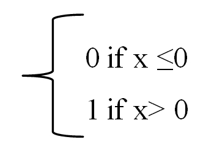
However, for the Sigmoid function, the gradient tends to vanish as we increase or decrease the value of x.
The Sigmoid function is given as follows:
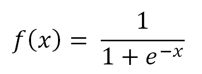
The Sigmoid function has a range of [0, 1], whereas the ReLU function has the range [0, 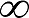
This layer is the third stage of a CNN. After applying some Rectified Linear Units later, the programmer might choose to apply a Pooling layer. The layer can also be referred to as a down-sampling layer.
The pooling function is basically used to further modify the output of the layer. The primary function of the layer is to replace the output of the network at a certain location with a summarized statistics of the neighboring outputs. There are multiple options for this layer, Max-pooling being the most popular one. Max pooling operation [93] operates within a rectangular neighborhood, and reports the maximum output from it. Max-pooling basically takes a filter (generally of size 2x2) and stride of the same length, that is, 2. The filter is then applied to the input volume, and it outputs the maximum number in every region where the filter convolves around. Figure 3.10 shows a representation of the same thing. Other popular options for Pooling layers are the average of an L2 normal of a rectangular neighborhood, average of a rectangular neighborhood or a weighted average, which is based on the distance from the central pixel:
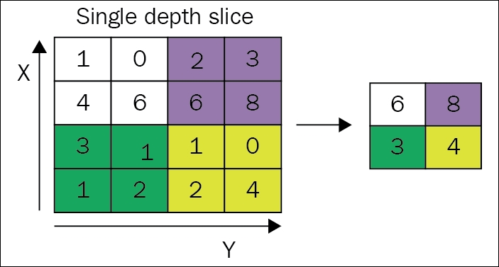
Figure 3.10: Example of Max-pool with a 2*2 filter and stride 2. Image sourced from Wikipedia.
The intuitive reason behind the Pooling layer is that once some specific feature of the original input volume is known, its exact location becomes trivial as compared to its location relative to the other features. With the help of pooling, the representation becomes almost invariant to small translations of the input. Invariance to translation signifies that for a small amount of translation on the input, the values of most of the pooled output do not vary significantly.
Invariance to local translation is extremely beneficial if we are interested in the neighboring features rather than the exact position of the feature. However, while dealing with computer vision tasks, it is required to be careful in the use of Pooling layer. Although pooling extensively helps in the reduction of complexity of the model, it might end up losing the location sensitivity of the model.
Let us take an example of image processing, which involves identifying a box in an image. Pooling layer in this case will help if we simply target to determine the existence of the box in the image. However, if the problem statement is more concerned with locating the exact position of the box, we will have to be careful enough while using the Pooling layer. As another example, let us say we are working on a language model, and are interested in identifying the contextual similarity between two words. In this case, the use of Pooling layer is not advisable, as it will lose out on some valuable feature information.
Therefore, it can be concluded that Pooling layer is basically used for reducing the computational complexity of the model. The Pooling layer is more like an averaging process, where we are more interested in a group of neighboring features. The layer can be applied in scenarios where we can afford to let go of some of the localized information.
The fully connected layer is the final layer of a CNN. The input volume for this layer comes from the output of the preceding Convolutional layer, ReLU, or Pooling layer. The fully connected layer takes this input and outputs an N dimensional vector, where N is the number of different classes present in the initial input datasets. The basic idea on which a fully connected layer works is that it works on the output received from the preceding layer, and identifies the specific feature that mostly correlates to a particular class. For example, if the model is predicting whether an image contains a cat or bird, it will have high values in the activation maps, which will represent some high-level features such as four legs or wings, respectively.